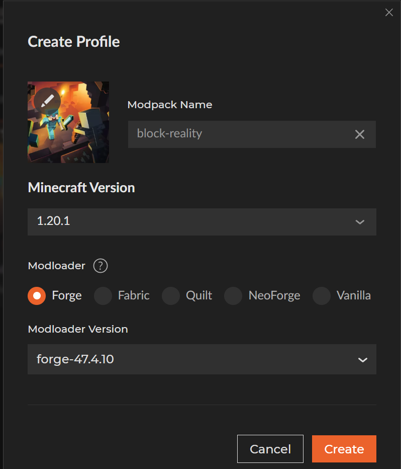
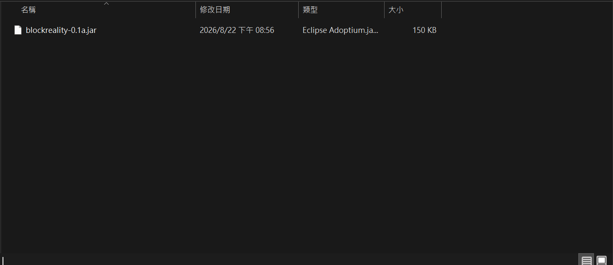
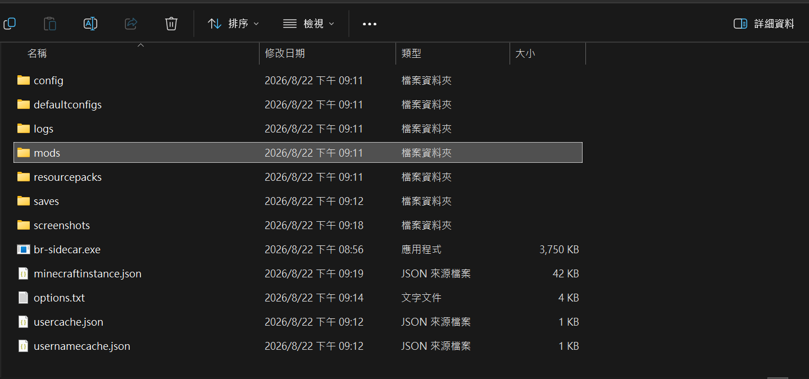
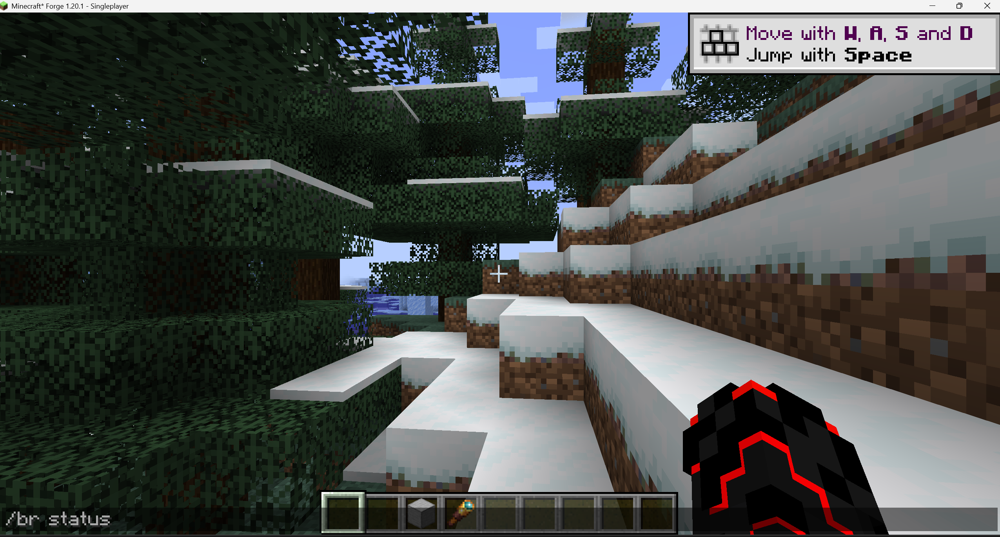
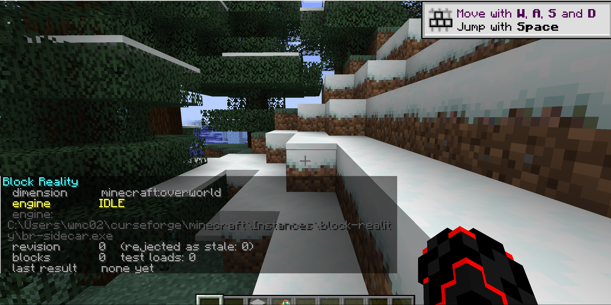

What you need
Any launcher works. The installer already knows where the vanilla launcher, Prism, MultiMC, Modrinth and CurseForge keep their instances.
macOS: install.sh will install the mod, but this release only ships engine
binaries for Windows and Linux. The mod still loads and plays, analysis is just off.
What is in the release
Block Reality is two programs. The mod reads your blocks and draws the HUD. A separate process does the finite element solve.
| File | What it is | Goes to |
|---|---|---|
blockreality-0.1a.jar |
the Forge mod | <instance>/mods/ |
br-sidecar.exe |
the analysis engine, Windows | <instance>/ |
br-sidecar |
the analysis engine, Linux | <instance>/ |
install.bat / install.sh |
the installer | run in place |
SHA256SUMS.txt |
hashes of every file in the archive | — |
FrameCore is statically linked into br-sidecar, so there is no separate library to install.
Running it as its own process instead of loading it into the JVM means a crash in the C++ costs one analysis
instead of the server and the save.
The engine is optional. Without it the mod loads and plays normally, with analysis disabled and reported as such.
Install
Make a Forge 1.20.1 instance
Skip this if you already have one. Otherwise create a new profile: Minecraft 1.20.1,
modloader Forge, any 47.x version.

forge-47.4.10. Any launcher will do, the
version numbers are what matter.Download and extract
Download the archive and extract it. Extract it properly rather than running the installer from inside a zip preview, because it copies the files sitting next to it.
Mirrored here as individual files: blockreality-0.1a.jar, br-sidecar.exe, br-sidecar, install.bat, install.sh, SHA256SUMS.txt.
Run the installer
On Windows, double-click install.bat. On Linux:
./install.shWith no arguments it looks for a Minecraft instance in the usual locations. If it finds one it uses it; if it finds several it lists them and asks which. You can also name the directory yourself:
install.bat "D:\games\my-instance\.minecraft"./install.sh ~/.minecraftTo see what it found without installing anything:
install.bat --list
The directory it wants is the game directory, the one with mods/ and saves/ in
it. Not the launcher folder.
Check the two files landed
This is also all a manual install is. If you would rather not run a script, copy these two files yourself.
The mod goes in mods/:

blockreality-0.1a.jar in <instance>/mods/. It is only about 150
KB because the solver is not in it.The engine goes one level up, in the instance root beside mods/ and saves/:

br-sidecar.exe in the instance root, the same folder as mods/ rather
than inside it.Verify in game
Launch the instance, load any world, press T and run:
/br status
You should get back something like this:

IDLE is what you want to see here.engine IDLE— resolved and waiting. It is idle because there is nothing built yet.engine:— the path it resolved to. If this line is missing,/br statuslists every path it searched instead.blocks 0 test loads: 0— nothing structural in range yet.last result none yet— no solve has run.
Troubleshooting
/br status shows no engine path
The mod looks for the engine in this order, and /br status prints every path it tried:
- the config file
- the
-Dbr.sidecarJVM argument - the
BR_SIDECARenvironment variable - the game directory
PATH
Usually it is the fourth one: put br-sidecar.exe in the game directory, next to
mods/ rather than inside it.
The installer found no Minecraft instance
It searched these:
%APPDATA%\.minecraft
%APPDATA%\PrismLauncher\instances\*
%APPDATA%\MultiMC\instances\*
%APPDATA%\ModrinthApp\profiles\*
%USERPROFILE%\curseforge\minecraft\Instances\*
If yours lives somewhere else, hand it the path directly:
install.bat "D:\games\my-instance\.minecraft"
It warns there is no br-sidecar next to the script
The zip did not fully extract, or install.bat got moved out on its own. It copies the files
sitting beside it, so it needs the folder intact.
Not fatal. The mod gets installed anyway and plays with analysis off.
It says there is no Forge in this instance
You pointed it at a vanilla instance. Block Reality needs Minecraft 1.20.1 with Forge 47.x — files.minecraftforge.net.
Checking the download is intact
SHA256SUMS.txt has a hash for every file in the archive. To check them all at once:
sha256sum -c SHA256SUMS.txtOr on Windows, one file at a time:
certutil -hashfile br-sidecar.exe SHA256